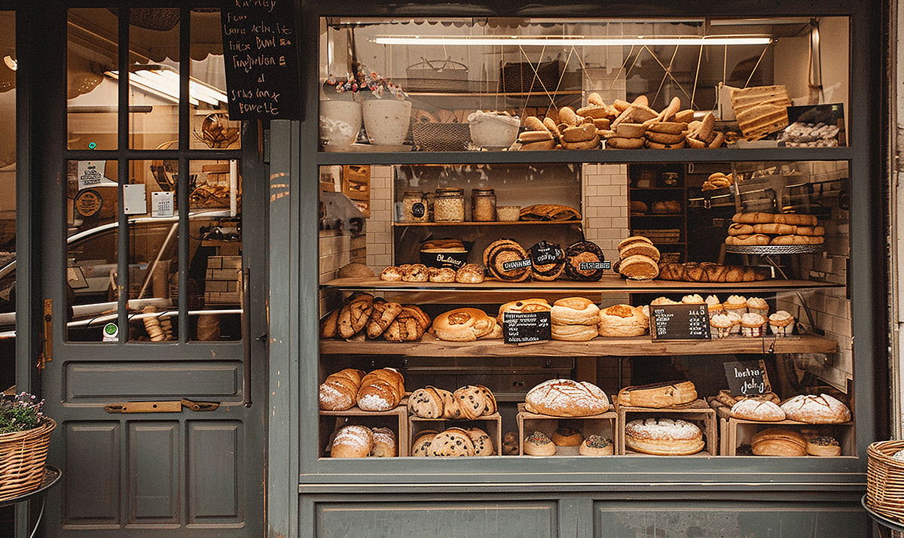

Marcy Delaney, Owner and Head Baker
Marcy mixes the sourdough every night before close and shapes the signature rye boules herself. If you have a question about a custom cake, she is the one who will call you back.
North Star Bakery
North Star opened in 2014 in a storefront that had been empty for six years. The oven came used from a bakery two counties over, the tables came from a church sale, and the first month we sold three kinds of bread and nothing else.

Marcy Delaney started the bakery after fifteen years of baking for other people's kitchens. She wanted a shop small enough that she could still shape loaves by hand and know the people buying them. Twelve years later the menu is longer, but the shop is the same size and she is still in the back at four in the morning.
Here is a look at the morning bake, from the deck oven to the cooling rack.
Our flour is milled in Ohio and delivered every other week, which is close enough that we know the miller by name. Butter and eggs come from two farms within an hour of the shop, and in the summer our fruit fillings come from the growers who set up at the Saturday market on the same block.
Buying regionally costs us a little more than ordering everything from one distributor, but it keeps money in the valley and it means we can call someone directly when a delivery is short. We would rather change a menu item for a week than switch to an ingredient we do not stand behind.
Bread that does not sell by close goes to the food pantry on Third Street the same evening, and day old pastries go out at half price in the morning. Very little of what we bake ends up in the trash.
Marcy mixes the sourdough every night before close and shapes the signature rye boules herself. If you have a question about a custom cake, she is the one who will call you back.
Tomas runs the pastry case and writes the seasonal specials. He is the reason there is a rhubarb hand pie on the shelf every spring, and he trains every new baker on lamination.
Jenna handles pre orders, allergy questions, and the Saturday morning rush. If you submit a request through our pre order form, she is the one who answers it.